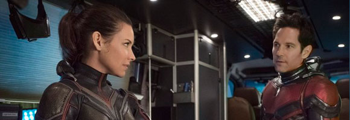
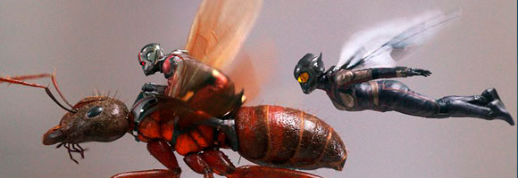

El dilema de Hope van Dyme
Ant-Man y la Avispa, la secuela sobre El Hombre Hormiga de Marvel, llega a las salas de cine españolas el 4 de julio y en esta nueva entrega, Scott Lang (Paul Rudd) no será el único superhéroe. Hope van Dyne (Evangeline Lilly), la hija de Hank Pym (Michael Douglas), se convertirá en la Avispa. Eso sí, aunque ella es una superheroína nueva en el Universo Cinematográfico de Marvel, el tráiler de la película ya ha adelantado que está mucho más preparada que su compañero Ant-Man. Peyton Reed, director de Ant-Man y la Avispa, ha hablado sobre el dilema que tendrá la superheroína en la película con respecto a trabajar con Scott Lang y el estado de su relación. "Bueno, la película está centrada en Scott Lang y Hope van Dyne y en Hope convirtiéndose en la Avispa... y su relación está un poco fracturada...", explica en ComicBook. "Creo que para Hope, en particular, la pregunta es: '¿Necesito a este tío en mi vida?' Soy una heroína al completo de forma independiente, ¿necesito un compañero?'. Esa fue una premisa divertida con la que empezar", añade.

La última vez que vimos juntos a Hope van Dyne y Scott Lang se besaban y eran descubiertos por Hank Pym. No obstante, el tiempo ha pasado y Ant-Man y la Avispa estará ambientada tras los acontecimientos ocurridos en Capitán América: Civil War y antes de los sucesos de Vengadores: Infinity War y la relación entre ambos no será demasiado buena. El realizador ha reconocido que se han distanciado desde la película en solitario de El Hombre Hormiga, lo que hace que Hope van Dyne no esté muy segura sobre él. ¿Conseguirán resolver sus diferencias o decidirán ir cada uno por su lado al final de la película? Ahora, no te pierdas el tráiler de Ant-Man y la Avispa que encontrarás sobre estas líneas. La cinta cuenta en su reparto con Laurence Fishburne, Michael Peña, Michelle Pfeiffer, Judy Greer, Hannah John-Kamen y Walton Goggins; entre otros. Sobre estas líneas, no te pierdas el tráiler.
